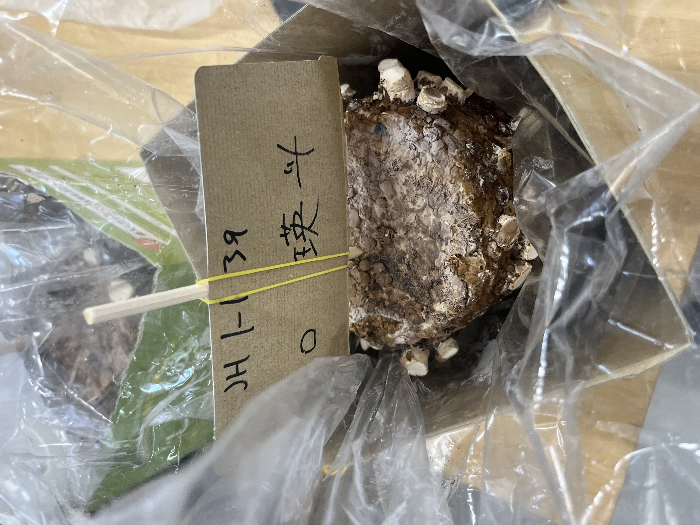

しいたけの栽培
しいたけを収穫するまで
一回目
一回目では菌床を箱から出したときとさほど変わらなかった。しかし、よく見るときのこ？っぽいやつがあってこれがきのこになるのかなと疑問に思った。しっかり水も与えているのでよく育ってほしいと思った。
二回目
そこそこ育ってきている傘みたいな部分は全然まだできていないけど、かなりの数生えてきていていい調子だと思う。収穫するまでしいたけの手入れを忘れずに行っていきたい。
三回目
もう完成したと思う。自分はほとんどしいたけを食べないから実物はあまり見たことがないけど傘みたいなとこもかなり大きくなっているし十分食べれそうなタイミングだからとても収穫が楽しみだ。
収穫後
何故か写真がなかった。収穫後はジップロック2個分くらいのしいたけを取ることができた。収穫量がとても奥手びっくりした。収穫したはいいものの、自分は食べないししいたけを食べるのは妹と母、祖母だけで、父も食べないので食べきるのはかなり長くなると思う。でも今回は栽培をするという経験をすることができてとても良かった。次はまた違う食材を育ててみたい。